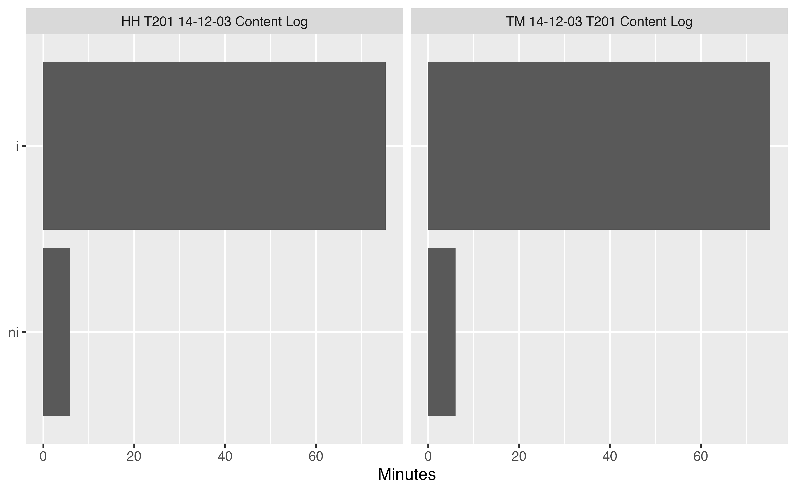
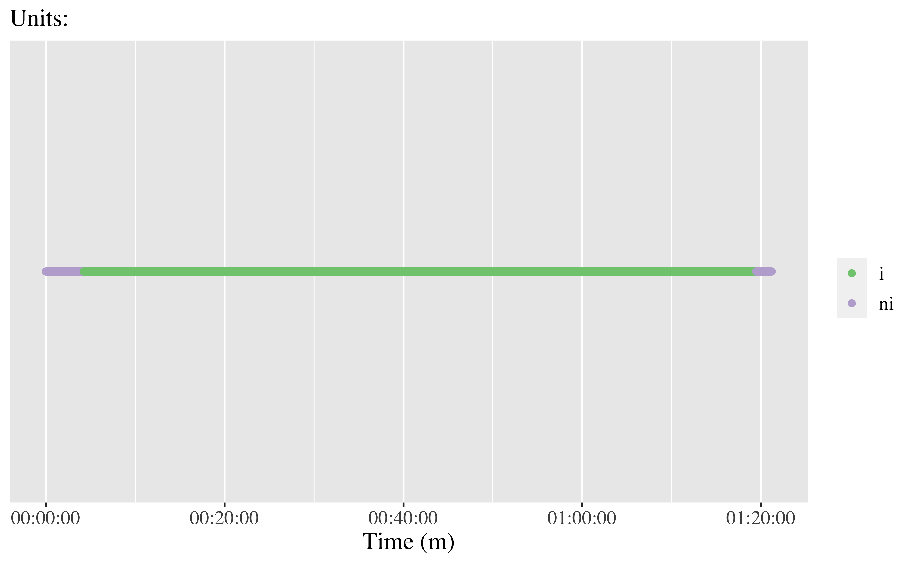
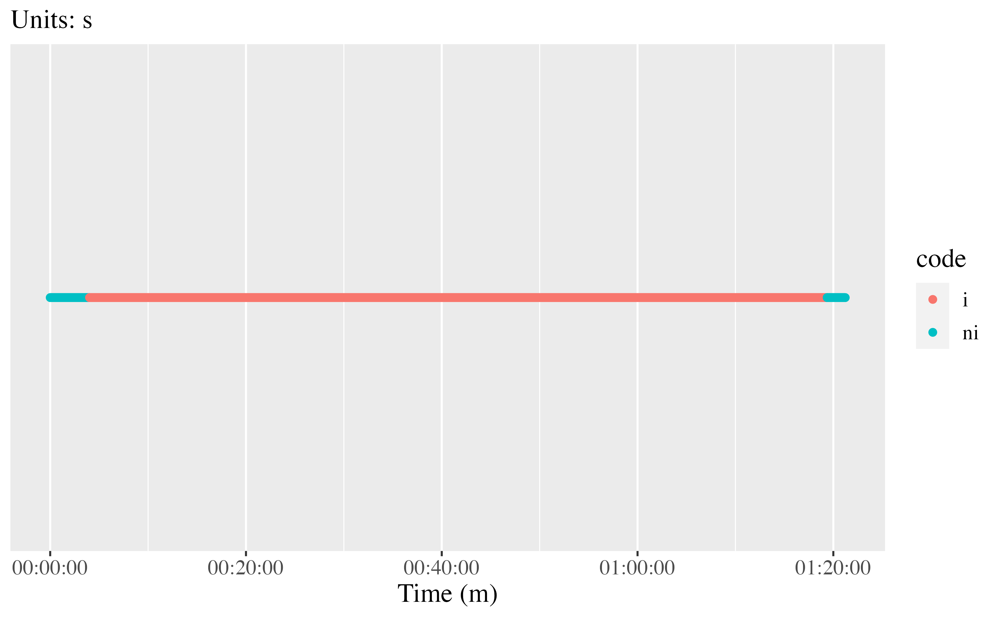
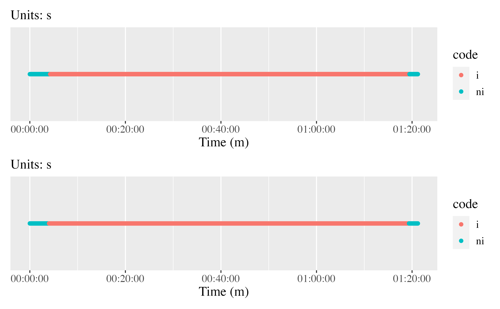

vignettes/calculating-interrater-agreement.Rmd
calculating-interrater-agreement.RmdFirst, load the {datavyu} and {datavyur} packages and the {tidyverse} suite of packages:
library(datavyu) library(datavyur) # (install via `devtools::install_github("iamamutt/datavyu/datavyur")`) library(tidyverse) # install via install.packages("tidyverse") library(irr) # install via install.packages("irr") library(patchwork) # install via install.packages("patchwork") library(here) # install.packages("here")
Next, let’s prepare the files we wish to analyze. To do so, we have to export them from the datavyu software, as follows:
.opf files:csv2opf.rb
.opf file should now be created.This is the directory (folder) passed to the datavyu functions below.
The {here} package can be used to flexibly (across computers/operating systems) specify file paths: To save on typing, the directory can be set for an entire R session via the following:
Frequency of codes; note that the code is the code listed appended to the column name after a period.
Note that you may wish to look at the names of the files, columns, and codes; the following function can be used to do that:
datavyu_col_search(here("irr-data", "datavyu_output_11-16-2020_14-13")) #> Searching through .csv files for valid .opf data... #> file column codes classes #> 1 LogClass_IG 1 V1 character #> 2 HH T201 14-12-03 Content Log LogClass_TO_MathPresent code01 character #> 3 TM 14-12-03 T201 Content Log LogClass_TO_MathPresent code01 character #> 4 LogClass_IG 1 code01 logical #> 5 TM 14-12-03 T201 Content Log LogClass_IG code01 logical #> 6 HH T201 14-12-03 Content Log LogClass_IS i character #> 7 TM 14-12-03 T201 Content Log LogClass_IS i character #> 8 HH T201 14-12-03 Content Log LogClass_IS notesap logical #> 9 HH T201 14-12-03 Content Log LogClass_TO_MathPresent notesap logical #> 10 LogClass_IG 1 notesap logical #> 11 TM 14-12-03 T201 Content Log LogClass_IG notesap logical #> 12 TM 14-12-03 T201 Content Log LogClass_IS notesap logical #> 13 TM 14-12-03 T201 Content Log LogClass_TO_MathPresent notesap logical #> 14 LogClass_IG 1 notesaw character #> 15 HH T201 14-12-03 Content Log LogClass_IS notesaw logical #> 16 HH T201 14-12-03 Content Log LogClass_TO_MathPresent notesaw logical #> 17 TM 14-12-03 T201 Content Log LogClass_IG notesaw logical #> 18 TM 14-12-03 T201 Content Log LogClass_IS notesaw logical #> 19 TM 14-12-03 T201 Content Log LogClass_TO_MathPresent notesaw logical #> 20 HH T201 14-12-03 Content Log LogClass_IS notesck logical #> 21 HH T201 14-12-03 Content Log LogClass_TO_MathPresent notesck logical #> 22 LogClass_IG 1 notesck logical #> 23 TM 14-12-03 T201 Content Log LogClass_IG notesck logical #> 24 TM 14-12-03 T201 Content Log LogClass_IS notesck logical #> 25 TM 14-12-03 T201 Content Log LogClass_TO_MathPresent notesck logical #> 26 HH T201 14-12-03 Content Log LogClass_IS notesed logical #> 27 HH T201 14-12-03 Content Log LogClass_TO_MathPresent notesed logical #> 28 LogClass_IG 1 notesed logical #> 29 TM 14-12-03 T201 Content Log LogClass_IG notesed logical #> 30 TM 14-12-03 T201 Content Log LogClass_IS notesed logical #> 31 TM 14-12-03 T201 Content Log LogClass_TO_MathPresent notesed logical #> 32 HH T201 14-12-03 Content Log LogClass_IS notesep logical #> 33 HH T201 14-12-03 Content Log LogClass_TO_MathPresent notesep logical #> 34 LogClass_IG 1 notesep logical #> 35 TM 14-12-03 T201 Content Log LogClass_IG notesep logical #> 36 TM 14-12-03 T201 Content Log LogClass_IS notesep logical #> 37 TM 14-12-03 T201 Content Log LogClass_TO_MathPresent notesep logical #> 38 LogClass_IG 1 noteshh character #> 39 HH T201 14-12-03 Content Log LogClass_IS noteshh logical #> 40 HH T201 14-12-03 Content Log LogClass_TO_MathPresent noteshh logical #> 41 TM 14-12-03 T201 Content Log LogClass_IG noteshh logical #> 42 TM 14-12-03 T201 Content Log LogClass_IS noteshh logical #> 43 TM 14-12-03 T201 Content Log LogClass_TO_MathPresent noteshh logical #> 44 HH T201 14-12-03 Content Log LogClass_IS notesnm logical #> 45 HH T201 14-12-03 Content Log LogClass_TO_MathPresent notesnm logical #> 46 LogClass_IG 1 notesnm logical #> 47 TM 14-12-03 T201 Content Log LogClass_IG notesnm logical #> 48 TM 14-12-03 T201 Content Log LogClass_IS notesnm logical #> 49 TM 14-12-03 T201 Content Log LogClass_TO_MathPresent notesnm logical #> 50 HH T201 14-12-03 Content Log LogClass_IS notestm logical #> 51 HH T201 14-12-03 Content Log LogClass_TO_MathPresent notestm logical #> 52 LogClass_IG 1 notestm logical #> 53 TM 14-12-03 T201 Content Log LogClass_IG notestm logical #> 54 TM 14-12-03 T201 Content Log LogClass_IS notestm logical #> 55 TM 14-12-03 T201 Content Log LogClass_TO_MathPresent notestm logical #> 56 LogClass_IG 1 offset character #> 57 HH T201 14-12-03 Content Log LogClass_IS offset integer #> 58 HH T201 14-12-03 Content Log LogClass_TO_MathPresent offset integer #> 59 TM 14-12-03 T201 Content Log LogClass_IG offset integer #> 60 TM 14-12-03 T201 Content Log LogClass_IS offset integer #> 61 TM 14-12-03 T201 Content Log LogClass_TO_MathPresent offset integer #> 62 HH T201 14-12-03 Content Log LogClass_IS onset integer #> 63 HH T201 14-12-03 Content Log LogClass_TO_MathPresent onset integer #> 64 LogClass_IG 1 onset integer #> 65 TM 14-12-03 T201 Content Log LogClass_IG onset integer #> 66 TM 14-12-03 T201 Content Log LogClass_IS onset integer #> 67 TM 14-12-03 T201 Content Log LogClass_TO_MathPresent onset integer #> 68 HH T201 14-12-03 Content Log LogClass_IS ordinal integer #> 69 HH T201 14-12-03 Content Log LogClass_TO_MathPresent ordinal integer #> 70 LogClass_IG 1 ordinal integer #> 71 TM 14-12-03 T201 Content Log LogClass_IG ordinal integer #> 72 TM 14-12-03 T201 Content Log LogClass_IS ordinal integer #> 73 TM 14-12-03 T201 Content Log LogClass_TO_MathPresent ordinal integer #> local #> 1 /Users/jrosenb8/datavyu/irr-data/datavyu_output_11-16-2020_14-13/LogClass_IG__HH T201 14-12-03 Content Log.csv #> 2 /Users/jrosenb8/datavyu/irr-data/datavyu_output_11-16-2020_14-13/LogClass_TO_MathPresent__HH T201 14-12-03 Content Log.csv #> 3 /Users/jrosenb8/datavyu/irr-data/datavyu_output_11-16-2020_14-13/LogClass_TO_MathPresent__TM 14-12-03 T201 Content Log.csv #> 4 /Users/jrosenb8/datavyu/irr-data/datavyu_output_11-16-2020_14-13/LogClass_IG__HH T201 14-12-03 Content Log.csv #> 5 /Users/jrosenb8/datavyu/irr-data/datavyu_output_11-16-2020_14-13/LogClass_IG__TM 14-12-03 T201 Content Log.csv #> 6 /Users/jrosenb8/datavyu/irr-data/datavyu_output_11-16-2020_14-13/LogClass_IS__HH T201 14-12-03 Content Log.csv #> 7 /Users/jrosenb8/datavyu/irr-data/datavyu_output_11-16-2020_14-13/LogClass_IS__TM 14-12-03 T201 Content Log.csv #> 8 /Users/jrosenb8/datavyu/irr-data/datavyu_output_11-16-2020_14-13/LogClass_IS__HH T201 14-12-03 Content Log.csv #> 9 /Users/jrosenb8/datavyu/irr-data/datavyu_output_11-16-2020_14-13/LogClass_TO_MathPresent__HH T201 14-12-03 Content Log.csv #> 10 /Users/jrosenb8/datavyu/irr-data/datavyu_output_11-16-2020_14-13/LogClass_IG__HH T201 14-12-03 Content Log.csv #> 11 /Users/jrosenb8/datavyu/irr-data/datavyu_output_11-16-2020_14-13/LogClass_IG__TM 14-12-03 T201 Content Log.csv #> 12 /Users/jrosenb8/datavyu/irr-data/datavyu_output_11-16-2020_14-13/LogClass_IS__TM 14-12-03 T201 Content Log.csv #> 13 /Users/jrosenb8/datavyu/irr-data/datavyu_output_11-16-2020_14-13/LogClass_TO_MathPresent__TM 14-12-03 T201 Content Log.csv #> 14 /Users/jrosenb8/datavyu/irr-data/datavyu_output_11-16-2020_14-13/LogClass_IG__HH T201 14-12-03 Content Log.csv #> 15 /Users/jrosenb8/datavyu/irr-data/datavyu_output_11-16-2020_14-13/LogClass_IS__HH T201 14-12-03 Content Log.csv #> 16 /Users/jrosenb8/datavyu/irr-data/datavyu_output_11-16-2020_14-13/LogClass_TO_MathPresent__HH T201 14-12-03 Content Log.csv #> 17 /Users/jrosenb8/datavyu/irr-data/datavyu_output_11-16-2020_14-13/LogClass_IG__TM 14-12-03 T201 Content Log.csv #> 18 /Users/jrosenb8/datavyu/irr-data/datavyu_output_11-16-2020_14-13/LogClass_IS__TM 14-12-03 T201 Content Log.csv #> 19 /Users/jrosenb8/datavyu/irr-data/datavyu_output_11-16-2020_14-13/LogClass_TO_MathPresent__TM 14-12-03 T201 Content Log.csv #> 20 /Users/jrosenb8/datavyu/irr-data/datavyu_output_11-16-2020_14-13/LogClass_IS__HH T201 14-12-03 Content Log.csv #> 21 /Users/jrosenb8/datavyu/irr-data/datavyu_output_11-16-2020_14-13/LogClass_TO_MathPresent__HH T201 14-12-03 Content Log.csv #> 22 /Users/jrosenb8/datavyu/irr-data/datavyu_output_11-16-2020_14-13/LogClass_IG__HH T201 14-12-03 Content Log.csv #> 23 /Users/jrosenb8/datavyu/irr-data/datavyu_output_11-16-2020_14-13/LogClass_IG__TM 14-12-03 T201 Content Log.csv #> 24 /Users/jrosenb8/datavyu/irr-data/datavyu_output_11-16-2020_14-13/LogClass_IS__TM 14-12-03 T201 Content Log.csv #> 25 /Users/jrosenb8/datavyu/irr-data/datavyu_output_11-16-2020_14-13/LogClass_TO_MathPresent__TM 14-12-03 T201 Content Log.csv #> 26 /Users/jrosenb8/datavyu/irr-data/datavyu_output_11-16-2020_14-13/LogClass_IS__HH T201 14-12-03 Content Log.csv #> 27 /Users/jrosenb8/datavyu/irr-data/datavyu_output_11-16-2020_14-13/LogClass_TO_MathPresent__HH T201 14-12-03 Content Log.csv #> 28 /Users/jrosenb8/datavyu/irr-data/datavyu_output_11-16-2020_14-13/LogClass_IG__HH T201 14-12-03 Content Log.csv #> 29 /Users/jrosenb8/datavyu/irr-data/datavyu_output_11-16-2020_14-13/LogClass_IG__TM 14-12-03 T201 Content Log.csv #> 30 /Users/jrosenb8/datavyu/irr-data/datavyu_output_11-16-2020_14-13/LogClass_IS__TM 14-12-03 T201 Content Log.csv #> 31 /Users/jrosenb8/datavyu/irr-data/datavyu_output_11-16-2020_14-13/LogClass_TO_MathPresent__TM 14-12-03 T201 Content Log.csv #> 32 /Users/jrosenb8/datavyu/irr-data/datavyu_output_11-16-2020_14-13/LogClass_IS__HH T201 14-12-03 Content Log.csv #> 33 /Users/jrosenb8/datavyu/irr-data/datavyu_output_11-16-2020_14-13/LogClass_TO_MathPresent__HH T201 14-12-03 Content Log.csv #> 34 /Users/jrosenb8/datavyu/irr-data/datavyu_output_11-16-2020_14-13/LogClass_IG__HH T201 14-12-03 Content Log.csv #> 35 /Users/jrosenb8/datavyu/irr-data/datavyu_output_11-16-2020_14-13/LogClass_IG__TM 14-12-03 T201 Content Log.csv #> 36 /Users/jrosenb8/datavyu/irr-data/datavyu_output_11-16-2020_14-13/LogClass_IS__TM 14-12-03 T201 Content Log.csv #> 37 /Users/jrosenb8/datavyu/irr-data/datavyu_output_11-16-2020_14-13/LogClass_TO_MathPresent__TM 14-12-03 T201 Content Log.csv #> 38 /Users/jrosenb8/datavyu/irr-data/datavyu_output_11-16-2020_14-13/LogClass_IG__HH T201 14-12-03 Content Log.csv #> 39 /Users/jrosenb8/datavyu/irr-data/datavyu_output_11-16-2020_14-13/LogClass_IS__HH T201 14-12-03 Content Log.csv #> 40 /Users/jrosenb8/datavyu/irr-data/datavyu_output_11-16-2020_14-13/LogClass_TO_MathPresent__HH T201 14-12-03 Content Log.csv #> 41 /Users/jrosenb8/datavyu/irr-data/datavyu_output_11-16-2020_14-13/LogClass_IG__TM 14-12-03 T201 Content Log.csv #> 42 /Users/jrosenb8/datavyu/irr-data/datavyu_output_11-16-2020_14-13/LogClass_IS__TM 14-12-03 T201 Content Log.csv #> 43 /Users/jrosenb8/datavyu/irr-data/datavyu_output_11-16-2020_14-13/LogClass_TO_MathPresent__TM 14-12-03 T201 Content Log.csv #> 44 /Users/jrosenb8/datavyu/irr-data/datavyu_output_11-16-2020_14-13/LogClass_IS__HH T201 14-12-03 Content Log.csv #> 45 /Users/jrosenb8/datavyu/irr-data/datavyu_output_11-16-2020_14-13/LogClass_TO_MathPresent__HH T201 14-12-03 Content Log.csv #> 46 /Users/jrosenb8/datavyu/irr-data/datavyu_output_11-16-2020_14-13/LogClass_IG__HH T201 14-12-03 Content Log.csv #> 47 /Users/jrosenb8/datavyu/irr-data/datavyu_output_11-16-2020_14-13/LogClass_IG__TM 14-12-03 T201 Content Log.csv #> 48 /Users/jrosenb8/datavyu/irr-data/datavyu_output_11-16-2020_14-13/LogClass_IS__TM 14-12-03 T201 Content Log.csv #> 49 /Users/jrosenb8/datavyu/irr-data/datavyu_output_11-16-2020_14-13/LogClass_TO_MathPresent__TM 14-12-03 T201 Content Log.csv #> 50 /Users/jrosenb8/datavyu/irr-data/datavyu_output_11-16-2020_14-13/LogClass_IS__HH T201 14-12-03 Content Log.csv #> 51 /Users/jrosenb8/datavyu/irr-data/datavyu_output_11-16-2020_14-13/LogClass_TO_MathPresent__HH T201 14-12-03 Content Log.csv #> 52 /Users/jrosenb8/datavyu/irr-data/datavyu_output_11-16-2020_14-13/LogClass_IG__HH T201 14-12-03 Content Log.csv #> 53 /Users/jrosenb8/datavyu/irr-data/datavyu_output_11-16-2020_14-13/LogClass_IG__TM 14-12-03 T201 Content Log.csv #> 54 /Users/jrosenb8/datavyu/irr-data/datavyu_output_11-16-2020_14-13/LogClass_IS__TM 14-12-03 T201 Content Log.csv #> 55 /Users/jrosenb8/datavyu/irr-data/datavyu_output_11-16-2020_14-13/LogClass_TO_MathPresent__TM 14-12-03 T201 Content Log.csv #> 56 /Users/jrosenb8/datavyu/irr-data/datavyu_output_11-16-2020_14-13/LogClass_IG__HH T201 14-12-03 Content Log.csv #> 57 /Users/jrosenb8/datavyu/irr-data/datavyu_output_11-16-2020_14-13/LogClass_IS__HH T201 14-12-03 Content Log.csv #> 58 /Users/jrosenb8/datavyu/irr-data/datavyu_output_11-16-2020_14-13/LogClass_TO_MathPresent__HH T201 14-12-03 Content Log.csv #> 59 /Users/jrosenb8/datavyu/irr-data/datavyu_output_11-16-2020_14-13/LogClass_IG__TM 14-12-03 T201 Content Log.csv #> 60 /Users/jrosenb8/datavyu/irr-data/datavyu_output_11-16-2020_14-13/LogClass_IS__TM 14-12-03 T201 Content Log.csv #> 61 /Users/jrosenb8/datavyu/irr-data/datavyu_output_11-16-2020_14-13/LogClass_TO_MathPresent__TM 14-12-03 T201 Content Log.csv #> 62 /Users/jrosenb8/datavyu/irr-data/datavyu_output_11-16-2020_14-13/LogClass_IS__HH T201 14-12-03 Content Log.csv #> 63 /Users/jrosenb8/datavyu/irr-data/datavyu_output_11-16-2020_14-13/LogClass_TO_MathPresent__HH T201 14-12-03 Content Log.csv #> 64 /Users/jrosenb8/datavyu/irr-data/datavyu_output_11-16-2020_14-13/LogClass_IG__HH T201 14-12-03 Content Log.csv #> 65 /Users/jrosenb8/datavyu/irr-data/datavyu_output_11-16-2020_14-13/LogClass_IG__TM 14-12-03 T201 Content Log.csv #> 66 /Users/jrosenb8/datavyu/irr-data/datavyu_output_11-16-2020_14-13/LogClass_IS__TM 14-12-03 T201 Content Log.csv #> 67 /Users/jrosenb8/datavyu/irr-data/datavyu_output_11-16-2020_14-13/LogClass_TO_MathPresent__TM 14-12-03 T201 Content Log.csv #> 68 /Users/jrosenb8/datavyu/irr-data/datavyu_output_11-16-2020_14-13/LogClass_IS__HH T201 14-12-03 Content Log.csv #> 69 /Users/jrosenb8/datavyu/irr-data/datavyu_output_11-16-2020_14-13/LogClass_TO_MathPresent__HH T201 14-12-03 Content Log.csv #> 70 /Users/jrosenb8/datavyu/irr-data/datavyu_output_11-16-2020_14-13/LogClass_IG__HH T201 14-12-03 Content Log.csv #> 71 /Users/jrosenb8/datavyu/irr-data/datavyu_output_11-16-2020_14-13/LogClass_IG__TM 14-12-03 T201 Content Log.csv #> 72 /Users/jrosenb8/datavyu/irr-data/datavyu_output_11-16-2020_14-13/LogClass_IS__TM 14-12-03 T201 Content Log.csv #> 73 /Users/jrosenb8/datavyu/irr-data/datavyu_output_11-16-2020_14-13/LogClass_TO_MathPresent__TM 14-12-03 T201 Content Log.csv
summarize_column(column = "LogClass_IS", code = "LogClass_IS.i") #> # A tibble: 2 x 3 #> LogClass_IS.i n percent #> * <chr> <dbl> <dbl> #> 1 ni 4 0.667 #> 2 i 2 0.333
Frequency of codes by file:
summarize_column(column = "LogClass_IS", code = "LogClass_IS.i", by_file = TRUE) #> # A tibble: 4 x 4 #> file LogClass_IS.i n percent #> * <chr> <chr> <dbl> <dbl> #> 1 HH T201 14-12-03 Content Log i 1 0.333 #> 2 HH T201 14-12-03 Content Log ni 2 0.667 #> 3 TM 14-12-03 T201 Content Log i 1 0.333 #> 4 TM 14-12-03 T201 Content Log ni 2 0.667
Plot of duration (note that summary = "duration" can be added to any of the above) by file:
freq_summary <- summarize_column(column = "LogClass_IS", code = "LogClass_IS.i", by_file = TRUE, summary = "duration") plot_column_summary(freq_summary)

prepared_time_series_tm <- prep_time_series(column = "LogClass_IS", code = "LogClass_IS.i", specified_file = "TM 14-12-03 T201 Content Log") plot_time_series(prepared_time_series_tm)

prepared_time_series_hh <- prep_time_series(column = "LogClass_IS", code = "LogClass_IS.i", specified_file = "HH T201 14-12-03 Content Log") plot_time_series(prepared_time_series_hh)
 These could be composed together using the patchwork library:
plot_time_series(prepared_time_series_tm) + plot_time_series(prepared_time_series_hh) + plot_layout(ncol = 1)

First, looking at data:
prepared_time_series_tm #> # A tibble: 4,880 x 2 #> ts code #> * <dbl> <chr> #> 1 0 ni #> 2 1 ni #> 3 2 ni #> 4 3 ni #> 5 4 ni #> 6 5 ni #> 7 6 ni #> 8 7 ni #> 9 8 ni #> 10 9 ni #> # … with 4,870 more rows prepared_time_series_hh #> # A tibble: 4,880 x 2 #> ts code #> * <dbl> <chr> #> 1 0 ni #> 2 1 ni #> 3 2 ni #> 4 3 ni #> 5 4 ni #> 6 5 ni #> 7 6 ni #> 8 7 ni #> 9 8 ni #> 10 9 ni #> # … with 4,870 more rows
We’ll do a “full” join, re] taining all time stamps for both files. First, we must rename one (or both) of the two code columns. Having done this, we can easily compare the two once joined:
prepared_time_series_tm <- rename(prepared_time_series_tm, code_tm = code) prepared_time_series_hh <- rename(prepared_time_series_hh, code_hh = code) joined_data <- prepared_time_series_tm %>% full_join(prepared_time_series_hh, by = "ts") joined_data #> # A tibble: 4,886 x 3 #> ts code_tm code_hh #> <dbl> <chr> <chr> #> 1 0 ni ni #> 2 1 ni ni #> 3 2 ni ni #> 4 3 ni ni #> 5 4 ni ni #> 6 5 ni ni #> 7 6 ni ni #> 8 7 ni ni #> 9 8 ni ni #> 10 9 ni ni #> # … with 4,876 more rows
We can calculate agreement using the {irr} package, passing only the 2nd and 3rd columns (with the codes) to the function agree() (from the {irr} function):
agree(joined_data[, 2:3]) #> Percentage agreement (Tolerance=0) #> #> Subjects = 4886 #> Raters = 2 #> %-agree = 99.5
We can do the same for Cohen’s Kappa using the kappa2 statistic:
kappa2(joined_data[, 2:3]) #> Cohen's Kappa for 2 Raters (Weights: unweighted) #> #> Subjects = 4886 #> Raters = 2 #> Kappa = 0.961 #> #> z = 67.2 #> p-value = 0